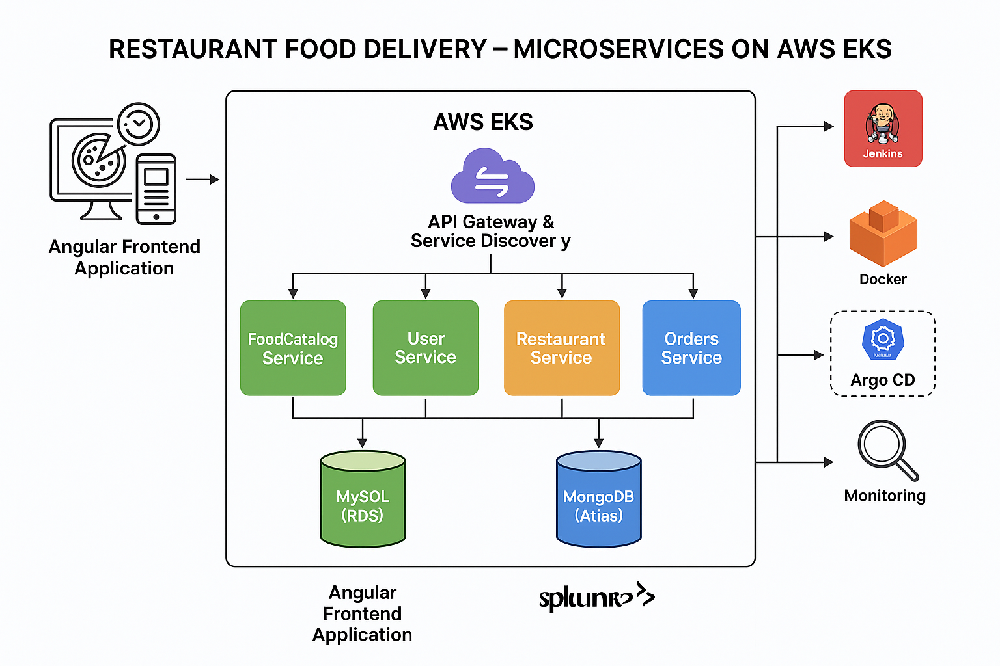

- üí° Goal: production-style microservices platform with automated GitOps deployments.
- üß© Pattern: service registry (Eureka), API routing, polyglot persistence (RDS + Atlas).
- üõ°Ô∏è Quality: SonarQube gates + JaCoCo coverage before containerization.
- üìà Impact: zero-touch deploy after merge; fast, consistent rollouts via ArgoCD.
Screenshots


Core Components
- Angular SPA consuming REST APIs via gateway/routing.
- Spring Boot microservices: FoodCatalogue, User, Restaurant, Orders.
- Discovery & routing with Eureka and Ingress/ALB on EKS.
Data Layer
- MySQL (RDS) for relational entities (users, menus, restaurants).
- MongoDB Atlas for flexible order/cart documents.
- Build: Jenkins multi-branch → compile, unit tests, SonarQube → Docker build → push (tagged by Git SHA).
- Deploy: ArgoCD auto-sync applies K8s manifests to AWS EKS; ALB ingress routes traffic.
- Operate: Actuator health checks; Postman smoke; logs/metrics in Splunk & CloudWatch.

| Service | Purpose | Storage | Repo |
|---|---|---|---|
| FoodCatalogue-MS | Items, categories, pricing | MySQL (RDS) | Repo |
| Restaurant-MS | Restaurants, menus, availability | MySQL (RDS) | Repo |
| User-MS | User registration/auth, profiles | MySQL (RDS) | Repo |
| Order-MS | Cart & order workflow | MongoDB Atlas | Repo |
| Eureka-service | Service registry & discovery | — | Repo |
| FoodOrder-Fe | Angular SPA | — | Repo |
Highlights
- Independent deploys per microservice; GitOps ensures auditability/versioned releases.
- Polyglot persistence: relational for entities; document store for orders/events.
- Quality gates (SonarQube + JaCoCo) required before image publish.
GitHub Organization Frontend (Angular)
FoodCatalogue-MS Restaurant-MS User-MS Order-MS Eureka-service
*Deployed and tested on AWS free-tier infrastructure with production-style CI/CD and GitOps.*